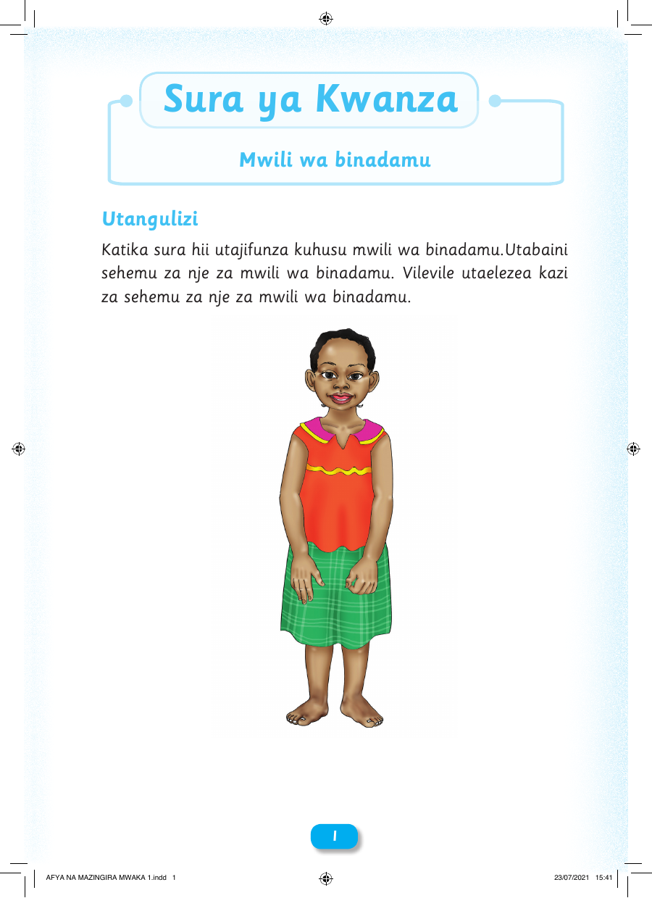

Sura ya Kwanza Mwili wa binadamu Utangulizi Katika sura hii utajifunza kuhusu mwili wa binadamu.Utabaini sehemu za nje za mwili wa binadamu. Vilevile utaelezea kazi za sehemu za nje za mwili wa binadamu. 11 AFYA NA MAZINGIRA MWAKA 1.indd 1 23/07/2021 15:41